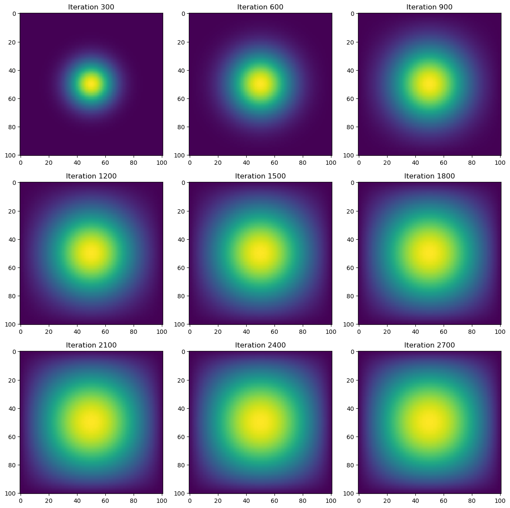
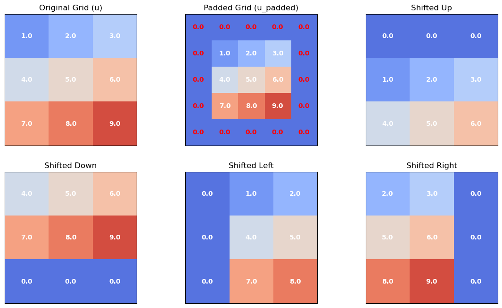
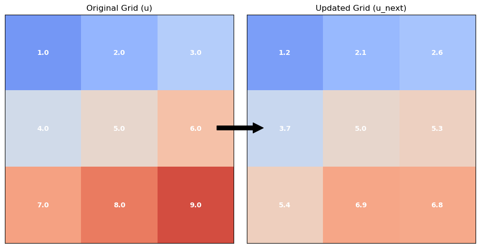
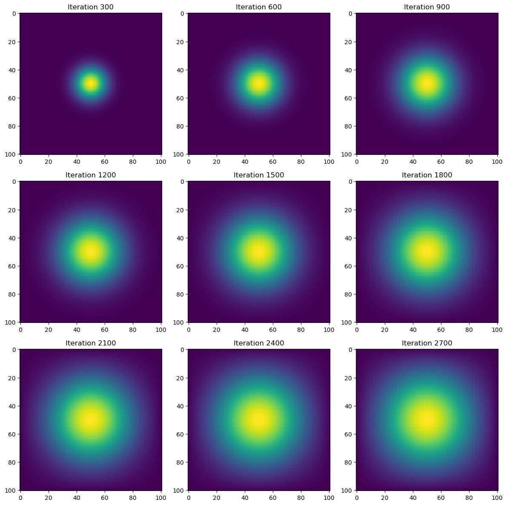
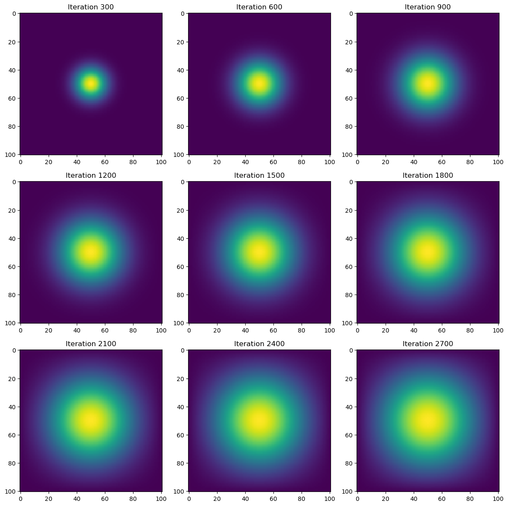

N = 101
epsilon = 0.2Introduction
Heat diffusion is a fundamental process in physics and engineering, described by the heat equation, a partial differential equation (PDE) modeling thermal energy transfer. In this project, we simulate 2D heat diffusion using multiple computational approaches:
- Matrix-vector multiplication (explicit finite difference method).
- Sparse matrix representation in JAX (efficient storage and computation).
- NumPy vectorized operations (direct array manipulation with
np.roll). - JAX-optimized just-in-time (JIT) compilation (high-speed execution).
The objective is to compare performance and efficiency across these methods while maintaining correct boundary conditions (to simulate heat diffusion properly) and stable numerical updates. Sparse representations and JIT-optimized computations significantly reduce runtime complexity compared to basic implementations. The results will be visualized using heatmaps at regular intervals to analyze diffusion patterns. Additionally, results will be accompanied by runtimes to compare code efficiency.
The Math of Heat Diffusion Simulations
Before we dive into the code that simulates heat diffusion, we must understand the math behind it.
The Continuous 2D Heat Equation
The heat diffusion equation describes how heat spreads over time in a two-dimensional space. The general form is:
\[\frac{\partial u}{\partial t} = \frac{\partial^2 u}{\partial x^2} + \frac{\partial^2 u}{\partial y^2}\]
where:
- \(u(x, y, t)\) represents the temperature at position \((x, y)\) at time \(t\).
- The right-hand side represents the Laplacian operator, which models how heat spreads from a point to its neighbors.
Discretization Using Finite Differences
We approximate the second derivatives using the finite difference method. Using a uniform grid with spacing \(\Delta x = \Delta y\) we approximate:
\[\frac{\partial^2 u}{\partial x^2} \approx \frac{u_{i+1,j} - 2u_{i,j} + u_{i-1,j}}{\Delta x^2}\]
\[\frac{\partial^2 u}{\partial y^2} \approx \frac{u_{i,j+1} - 2u_{i,j} + u_{i,j-1}}{\Delta y^2}\]
Substituting these into the heat equation:
\[\frac{u_{i,j}^{k+1} - u_{i,j}^{k}}{\Delta t} = \frac{u_{i+1,j}^{k} - 2u_{i,j}^{k} + u_{i-1,j}^{k}}{\Delta x^2} + \frac{u_{i,j+1}^{k} - 2u_{i,j}^{k} + u_{i,j-1}^{k}}{\Delta y^2} \]
Rearranging for \(u_{i,j}^{k+1}\):
\[u_{i,j}^{k+1} = u_{i,j}^{k} + \epsilon \left( u_{i+1,j}^{k} + u_{i-1,j}^{k} + u_{i,j+1}^{k} + u_{i,j-1}^{k} - 4u_{i,j}^{k} \right)\]
where \(\epsilon = \frac{ \Delta t}{\Delta x^2}\) is the stability parameter.
Matrix Representation of the Finite Difference Method
We represent the system in matrix form:
\[ u_{k+1} = u_k + \epsilon A u_k \]
where:
- \(u_k\) is the flattened temperature grid at time \(k\).
- \(A\) is the finite difference matrix that applies the heat diffusion stencil.
The finite difference matrix \(A\) for a grid of size \(N \times N\) is:
\[ A = \begin{bmatrix} T & I & 0 & 0 & \dots & 0 \\ I & T & I & 0 & \dots & 0 \\ 0 & I & T & I & \dots & 0 \\ \vdots & \vdots & \vdots & \ddots & \vdots & \vdots \\ 0 & 0 & 0 & \dots & T & I \\ 0 & 0 & 0 & \dots & I & T \end{bmatrix} \]
where: - \(T\) is an \(N \times N\) tridiagonal matrix representing left-right interactions:
\[ T = \begin{bmatrix} -4 & 1 & 0 & \dots & 0 \\ 1 & -4 & 1 & \dots & 0 \\ 0 & 1 & -4 & \dots & 0 \\ \vdots & \vdots & \vdots & \ddots & \vdots \\ 0 & 0 & 0 & \dots & -4 \end{bmatrix} \]
- \(I\) is an \(N \times N\) identity matrix that accounts for top/bottom interactions.
This matrix enforces:
- Self-weight (-4) at each grid point.
- Neighboring weights (+1) for adjacent grid points.
Initializing Our Heat Diffusion Simulation
For our simulations we will use a grid size N = 101 and stability parameter \(\epsilon = 0.2\).
We initialize the simulation with a single heat source at the center.
We’ll use the following initial condition:
import numpy as np
from matplotlib import pyplot as plt
# construct initial condition: 1 unit of heat at midpoint.
u0 = np.zeros((N, N))
u0[int(N/2), int(N/2)] = 1.0
plt.imshow(u0)
Heat Diffusion With Matrix-Vector Multiplication
In order to begin our 2D heat simulations we’ll create a file heat_equation.py with the following packages:
import numpy as np
import jax.numpy as jnp
import jax
from scipy.sparse import diags
from jax.experimental.sparse import BCOOUsing the math above we use matrix-vector multiplication to simulate heat diffusion. The grid is flattened into a 1D vector to apply the finite difference matrix efficiently:
\[ u_{k+1} = u_k + \epsilon A u_k \]
where:
- \(A\) is the finite difference matrix of size \(N^2 \times N^2\).
- \(U^k\) is the flattened temperature grid at time \(k\).
- \(\epsilon\) is the stability constant.
This formula is represented by the following function:
from heat_equation import advance_time_matvecmul
import inspect
print(inspect.getsource(advance_time_matvecmul))def advance_time_matvecmul(A, u, epsilon):
"""Advances the simulation by one timestep, via matrix-vector multiplication
Args:
A: The 2d finite difference matrix, N^2 x N^2.
u: N x N grid state at timestep k.
epsilon: stability constant.
Returns:
N x N Grid state at timestep k+1.
"""
N = u.shape[0]
u = u + epsilon * (A @ u.flatten()).reshape((N, N))
return u
In order for the function above to run we also need to write a function get_A() that constructs the matrix A:
from heat_equation import get_A
print(inspect.getsource(get_A))def get_A(N):
"""Constructs the finite difference matrix A for the heat equation.
Args:
N: Grid size
Returns:
A: Finite difference matrix (N^2 x N^2).
"""
n = N * N
diagonals = [
-4 * np.ones(n), # Main diagonal
np.ones(n - 1), # Right neighbor
np.ones(n - 1), # Left neighbor
np.ones(n - N), # Upper neighbor
np.ones(n - N) # Lower neighbor
]
# Apply boundary conditions (preventing wrap-around)
diagonals[1][(N-1)::N] = 0
diagonals[2][(N-1)::N] = 0
# Construct the finite difference matrix
A = (
np.diag(diagonals[0]) +
np.diag(diagonals[1], 1) +
np.diag(diagonals[2], -1) +
np.diag(diagonals[3], N) +
np.diag(diagonals[4], -N)
)
return A
To test our functions and create a heat simulation, we’ll write a function that allows us to specify our type of function that updates the heat distribution from heat_equations.py and the version of matrix A we’ll use in each test.
The following function wraps our testing and visualization for all test cases:
import matplotlib.pyplot as plt
import time
def heat_diffusion_test(func,
u_init,
epsilon,
iterations=2700,
snapshot_interval=300,
matrix_A=None):
"""
Runs and visualizes the heat diffusion simulation.
Args:
- func (function): The function that updates the heat distribution.
- u_init (np.ndarray or jnp.ndarray): Initial heat distribution (N x N grid).
- epsilon: Stability constant.
- iterations: Total number of iterations to run.
- snapshot_interval: Interval at which to capture snapshots.
- matrix_A: matrix A.
Returns:
- Heat simulation visualizations
- Total execution time of the simulation.
"""
# Copy the initial condition
u = np.copy(u_init) if isinstance(u_init, np.ndarray) else jnp.array(u_init)
# Store snapshots for visualization
snapshots = []
# Precompile JAX function if applicable
if "jax" in str(type(func)):
u = func(u, epsilon) # JAX functions require precompilation
u.block_until_ready()
# Run the simulation and time it
start_time = time.time()
for i in range(1, iterations + 1):
if matrix_A is not None: # For matrix-vector multiplication
u = func(A, u, epsilon)
else:
u = func(u, epsilon)
if i % snapshot_interval == 0:
snapshots.append(np.array(u)) # Convert JAX arrays to NumPy if needed
# Ensure JAX computations complete
if isinstance(u, jnp.ndarray):
u.block_until_ready()
end_time = time.time()
elapsed_time = end_time - start_time
# Plot results in a 3x3 grid
fig, axes = plt.subplots(3, 3, figsize=(12, 12))
for idx, snapshot in enumerate(snapshots):
ax = axes[idx // 3, idx % 3]
ax.imshow(snapshot, cmap="viridis", interpolation="nearest")
ax.set_title(f"Iteration {(idx + 1) * snapshot_interval}")
plt.tight_layout()
plt.show()
return elapsed_timeWe can now test our first heat simulation using get_A() and heat_diffusion_test() with advance_time_matvecmul() passed as the function in the test arguments:
import heat_equation
A = get_A(N)
time = heat_diffusion_test(advance_time_matvecmul, u0, epsilon, matrix_A=A)
print(f"Total execution time: {time:.2f} seconds")
Total execution time: 35.84 secondsThis method, while mathematically correct, is computationally expensive (as seen by the runtime of approximately 36 seconds). In the next sections, we optimize it using sparse matrices and vectorized operations.
Optimizing Computation With Sparse Matrices
The finite difference matrix \(A\) is mostly zeros, leading to wasted computations. Using JAX sparse matrices, we store only nonzero values, reducing memory usage and improving efficiency.
We’ll write a function get_sparse_A() that computes the sparse matrix using the batched coordinate BCOO format to only use \(O(N^2)\) space for the matrix, and only take \(O(N^2)\) time for each update:
from heat_equation import get_sparse_A
print(inspect.getsource(get_sparse_A))def get_sparse_A(N):
"""Constructs the sparse matrix A using JAX sparse format."""
A = get_A(N) # Get the dense matrix A
A_sp_matrix = BCOO.fromdense(jnp.array(A)) # Convert dense matrix to JAX sparse format (BCOO)
return A_sp_matrix
Here, A_sp_matrix is the sparse matrix of A which should make the compute more efficient. We can test this by rerunning the heat simulation using the get_sparse_A() matrix and the same heat_diffusion_test() function, comparing the runtimes:
import heat_equation
A = get_sparse_A(N)
time = heat_diffusion_test(advance_time_matvecmul, u0, epsilon, matrix_A=A)
print(f"Total execution time: {time:.2f} seconds")
Total execution time: 1.86 secondsRuntime for the heat simulation using the sparse matrix of A is more than 10x faster (19.27x) at approximately 2 seconds. Still, we can make the heat simulation more efficient by replacing advance_time_matvecmul(), which utilizes matrix-vector multiplications with vectorized array operations like np.roll().
Direct NumPy Vectorization
The matrix-vector multiplication approach is useful, particularly in other PDE problems, such as Poisson equations, where the matrix equation must be solved. However, for the heat equation, it is not necessary in terms of computation. Instead, we can use NumPy’s np.roll() to compute updates directly.
We’ll do this by writing the function advance_time_numpy() in heat_equation.py:
from heat_equation import advance_time_numpy
print(inspect.getsource(advance_time_numpy))def advance_time_numpy(u, epsilon):
"""Advances the simulation using NumPy's np.roll for boundary handling."""
u_padded = np.pad(u, pad_width=1, mode='constant', constant_values=0) # Pad u with zeros
u_next = u + epsilon * ( # Update u using finite differences
np.roll(u_padded, 1, axis=0)[1:-1, 1:-1] + # Shift up
np.roll(u_padded, -1, axis=0)[1:-1, 1:-1] + # Shift down
np.roll(u_padded, 1, axis=1)[1:-1, 1:-1] + # Shift left
np.roll(u_padded, -1, axis=1)[1:-1, 1:-1] - # Shift right
4 * u # Subtract central value
)
return u_next # Return updated interior values
The function above works by padding the grid with zeros and computes the transformation using np.roll(). We can understand the function with the visual below:


Next, we can rerun the simulation using the advance_time_numpy() function as an argument in the visualize_heat_diffusion() function and compare runtimes:
import heat_equation
time = heat_diffusion_test(advance_time_numpy, u0, epsilon)
print(f"Total execution time: {time:.2f} seconds")
Total execution time: 0.21 secondsRuntime for the heat simulation using the direct NumPy vectorization is more than 100x faster (170.67x) than the base matrix-vector simulation we did at 0.21 seconds. While already fast, we can achieve a quicker runtime by applying the jit function to essentially the same function advance_time_numpy(), using the JAX package.
JAX JIT Compilation for Maximum Speed
Using JAX’s @jax.jit, we can compile the function into optimized machine code, further reducing execution time.
We’ll do this by writing the function advance_time_jax() in heat_equation.py with @jax.jit above the function:
from heat_equation import advance_time_jax
print(inspect.getsource(advance_time_jax))def advance_time_jax(u, epsilon):
"""Advances the simulation using JAX and just-in-time compilation."""
u_padded = np.pad(u, pad_width=1, mode='constant', constant_values=0) # Pad u with zeros
u_next = u + epsilon * ( # Update u using finite differences
jnp.roll(u_padded, 1, axis=0)[1:-1, 1:-1] + # Shift up
jnp.roll(u_padded, -1, axis=0)[1:-1, 1:-1] + # Shift down
jnp.roll(u_padded, 1, axis=1)[1:-1, 1:-1] + # Shift left
jnp.roll(u_padded, -1, axis=1)[1:-1, 1:-1] - # Shift right
4 * u # Subtract central value
)
return u_next # Return updated interior values
The only difference between the direct NumPy vectorization function is that we use @jax.jit above our function and replace the NumPy calls np with the JAX NumPy calls jnp.
We’ll run the heat diffusion test one last time using the JAX optimized function and compare execution speed:
import heat_equation
time = heat_diffusion_test(advance_time_jax, u0, epsilon)
print(f"Total execution time: {time:.2f} seconds")
Total execution time: 0.06 secondsRuntime for the heat simulation using the JAX jit operation is more than 2x faster (3.5x) than the direct NumPy vectorization simulation we did at 0.06 seconds. This is nearly 600x faster than the base matrix-vector simulation.
Conclusion: Applications to Deep Learning
Although this blog focuses on simulating heat diffusion, the computational techniques used are directly applicable to deep learning and neural networks. The methods explored, matrix operations, sparse representations, vectorized computations, and JIT compilation, are fundamental to training and optimizing deep learning models.